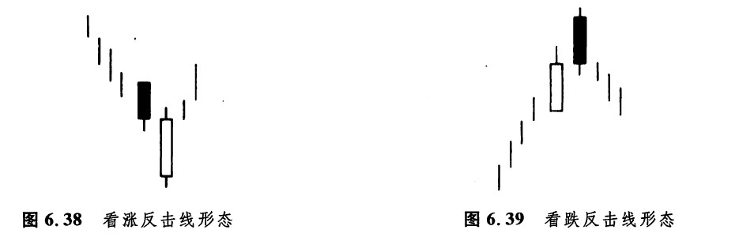
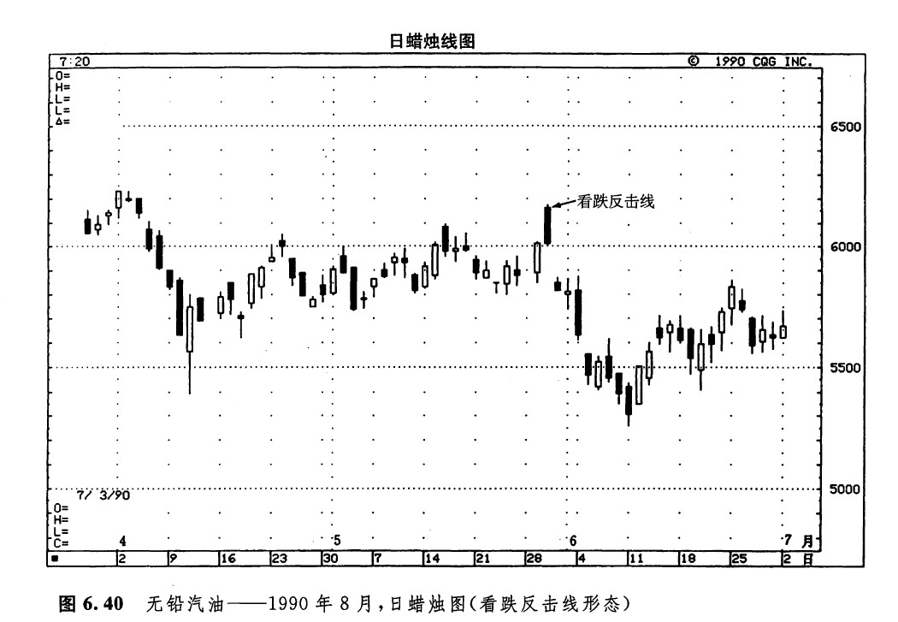
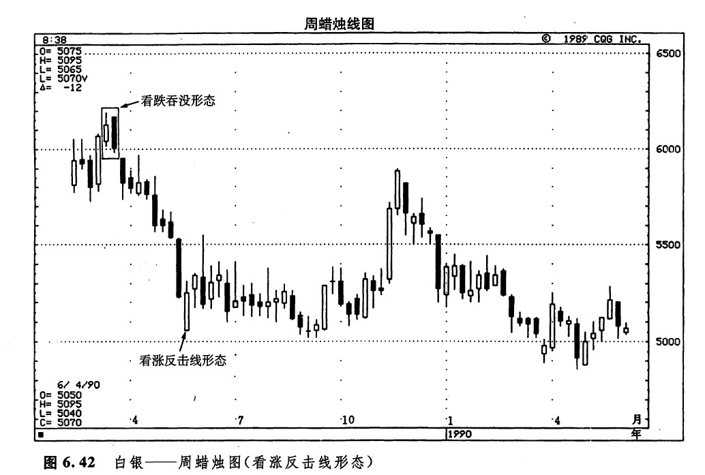
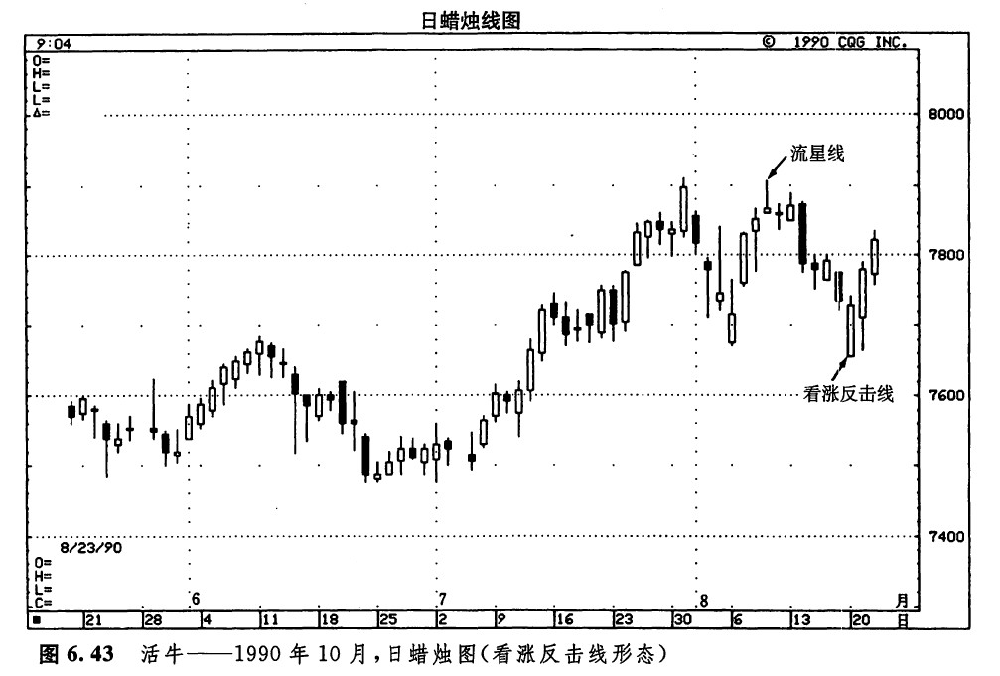

反击线形态（约会线形态）
当两根颜色相反的蜡烛线具有相同的收市价时，就形成了一个反击线形态（也称为约会线形态）。描述这种形态，最好的办法是讨论如图6.38和图6.39所示的示意图。如图6.38所示，是一个看涨反击蜡烛线的例子。本形态出现在下降行情中。在这个形态中，第一根蜡烛线是一根长长的黑色蜡烛线。在第二根蜡烛线上，市场的开市价急剧地向下跳空。到此刻为止，熊方觉得信心十足。但是马上，牛方发动了反攻，把市场推了上来，使价格重新回到了前一天收市价的水平。于是，先前的下降趋势的马头就被勒住了。
我们不妨把看涨反击形态同看涨剌透在形态上作一番比较。如果您还记得的话，刺透形态与本图所示的看涨反击线形态一样，也是由两根蜡烛线组成的。它们之间主要的区别是，看涨反击线通常并不把收市价向上推进到前一天的白色实体的内部，而是仅仅回升到前一天的收市价的位置。而在剌透形态中，第二根蜡烛线深深地向上穿入了前一个黑色实体之内。因此，剌透形态与看涨反击线形态相比较，刺透形态是一种更为重要的底部反转信号。尽管如此，正如下面列举的一些实例所显示的，我们对看涨反击线形态还是不可小觑的。

从外形上看，看涨反击线形态与看跌的切入线形态（参见第四章，图4.31）也有相像之处。它们之间的区别是，白色的看涨反击线比切入线形态的白色蜡烛线更长。换句话说，在看涨反击蜡烛线上，市场在开市时急剧地向下跳空，然后市场再向上反弹，回升到前一天的收市水平；而在切入蜡烛线上，市场在开市时只是稍稍下跌了一些，然后便回升到前一天的收市水平。
图6.39所示是一根看跌反击蜡烛线。这种形态属于顶部反转形态，当它出现时，将阻止之前的上涨行情。在这种反击线形态中，第一根蜡烛线是长长的白色蜡烛线，保持了牛市一贯的上升动力。在下一根蜡烛线上，市场在开市时向上跳空。但从此时起，熊方挺身而出，发起反击，将价格拉回到前一天的收市价的水平。
如果说看涨反击线形态与刺透形态有渊源的话。那么，看跌反击线形态与乌云盖顶形态也有类似的关系。在看跌反击线形态中，第二天的开市价高于前一天的最高点，这一点与乌云盖顶形态是一致的。但是，与乌云盖顶形态不同的是，这一天的收市价并没有向下穿入前一天的白色蜡烛线之内。由此看来，乌云盖顶形态所发出的顶部反转信号，比看跌反击线形态更强。
在反击线形态中，一项重要的考虑因素是，第二天的开市价是否强劲地上升到较高的水平（在看跌反击线形态中），或者是否剧烈地下降到较低的水平（在看涨反击线形态中）。其核心思想是，在该形态第二天开市时，市场本来已经顺着既有趋势向前迈了一大步，但是后来，却发生了意想不到的变故！到当日收市时，市场竟然完全返回到前一天收市价的水平！
如图6.40所示，5月29日是一根长的白色蜡烛线。市场本已于一周前开始形成上涨行情，这条蜡烛线就为这段上涨行情增色不少。5月30日，市场在开市时剧烈上涨，充分印证了上述上升趋势。然而，从此往后，市场在当日剩下的交易时间里走的都是下山道。到当日收市时，市场已经完全跌回到前一天收市价的水平。于是，5月29日和30日这两天，就构成了一个看跌反击线形态。

如图6.41所示，看跌反击线形态终止了一段上冲行情。如图6.42所示，随着1989年3月的看跌吞没形态的出现，市场一泻而下。几个月以后，图示的看涨反击线形态撑住了这场暴跌。请记住，对于所有的趋势反转指标来说（比如说反击蜡烛线形态），它们实质上揭示了趋势即将发生变化。这并不意味着价格将掉头转向相反的方向。这里的实例正好说明了这一点。通过这个实倒我们看到，图示的底部反转形态发出信号，表明之前的趋势已经结束，于是市场从下跌转为横向延伸。本实例还说明，在反击线形态中，第二根蜡烛线的收市价未必一定与前一天的收市价完全一致，才能够形成有效的反转信号。如图6.43所示，当该流星线出现后，价格逐步受到侵蚀，直到图示的看涨反击线出现，才扭转了颓势。这根看涨反击线还有另一方面的积极性质：当日的开市价本来处在7月底、8月初形成的支撑区的下方，但是，市场并未能坚持住这一新低价位。这也说明，熊方已经丧失了对市场的控制权。


